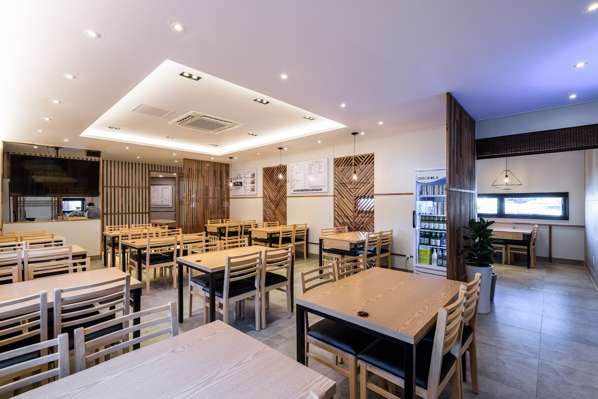

Gozip Dol Wooluck Jeju Airport Branch: A Seafood Stop to Consider in Jeju
At a glance: Gozip Dol Wooluck Jeju Airport Branch is a Jeju-si restaurant whose name appears in online recommendations for seafood and hairtail dishes. Google Maps lists it at 30 Imhang-ro and shows a 4.7-star rating from 5,874 reviews. Check the current menu and practical details before you go.
Jeju is closely associated with seafood, and Gozip Dol Wooluck is one local restaurant that appears in online roundups of places to try. Its airport-branch name may make it useful to consider when planning a meal around a Jeju visit, but it is best to confirm the location and your route on a map rather than assume how close it is to the airport.
For visitors unfamiliar with Korean food, one dish to recognize is galchi-jorim (갈치조림), a spicy-savoury braise made with hairtail, a long, silver fish. Naver search results associate Gozip Dol Wooluck with hairtail braise and seafood, although search snippets are not a guaranteed or up-to-date menu. Treat that as a clue, not a promise: check the restaurant’s current information or ask staff what is available on the day.
What to expect from the food
Jeju seafood meals can be a good way to explore the island’s food culture, especially if you want something beyond familiar international dishes. If hairtail is on the menu, expect a fish-based dish rather than a boneless fillet; ask about bones if that matters to you. A braised preparation is generally served with a seasoned sauce, so it may be spicy or strongly flavoured. The restaurant’s own current menu is the best source for ingredients and preparation details.
Not every diner is comfortable with seafood, chilli, or fish bones. If you have an allergy, dietary restriction, or a preference for mild food, explain it clearly before ordering. You can show a translated note on your phone if you are unsure how to describe it in Korean. For a seafood restaurant, it is particularly important to state an allergy plainly and confirm that staff understand; do not rely on a dish name alone to identify every ingredient.
Is it worth adding to your itinerary?
Google Maps displays a 4.7 rating based on 5,874 reviews, a substantial amount of visitor feedback. Ratings can help you shortlist a restaurant, but they do not guarantee that every meal or visit will match your expectations. Read a selection of recent reviews for comments on the specific dishes, service, and dining experience you care about. Reviews may also refer to another branch, so check that the post is about the Jeju Airport Branch.
Naver search results also mention Gozip Dol Wooluck in Jeju restaurant recommendations, including lists related to seafood and hairtail dishes. Those results are useful as a discovery signal, not as confirmation of a current menu or a separate rating. The available Naver local-place match was not confirmed, so use the restaurant’s official Instagram and Google Maps for your final checks.
Planning your visit
The supplied address is 30 Imhang-ro, Jeju-do. Address formats can vary between English-language maps and Korean listings, so search for the full branch name as well as the street address. Before setting out, check the map pin and confirm that it is the airport branch you intend to visit. This is especially helpful if you are coordinating a meal with a flight, rental-car return, or another time-sensitive plan.
Check the official Instagram account for current restaurant updates. The information provided here does not confirm opening hours, prices, reservation arrangements, or whether particular dishes are available on a given day. Look for those details before travelling, and contact the restaurant through its official channel if something is important to your plans. If you are visiting with a group, ask in advance about seating and ordering rather than assuming arrangements.
Good to know
- Bring the exact name: Search “Gozip Dol Wooluck Jeju Airport Branch” to distinguish this location from other branches or similarly named results.
- Confirm the dish: Online recommendations mention seafood and hairtail braise, but the current menu may differ.
- Ask about spice and bones: These can matter when ordering fish dishes. Confirm details with staff before choosing.
- Check before you go: Verify hours, prices, availability, and any booking needs through current official information.
- Use map navigation: Follow the map pin and confirm the address, rather than estimating travel time from the branch name.
Useful links
FAQ
What food is Gozip Dol Wooluck known for?
Online search results associate it with Jeju seafood and hairtail braise, or galchi-jorim. Confirm the current menu directly, as dishes can change.
Does the restaurant have good reviews?
Google Maps lists a 4.7-star rating from 5,874 reviews. Check recent reviews for details relevant to your visit and make sure they refer to this branch.
Where is the Jeju Airport Branch?
The supplied address is 30 Imhang-ro, Jeju-do. Use the linked map and verify the branch pin before travelling.